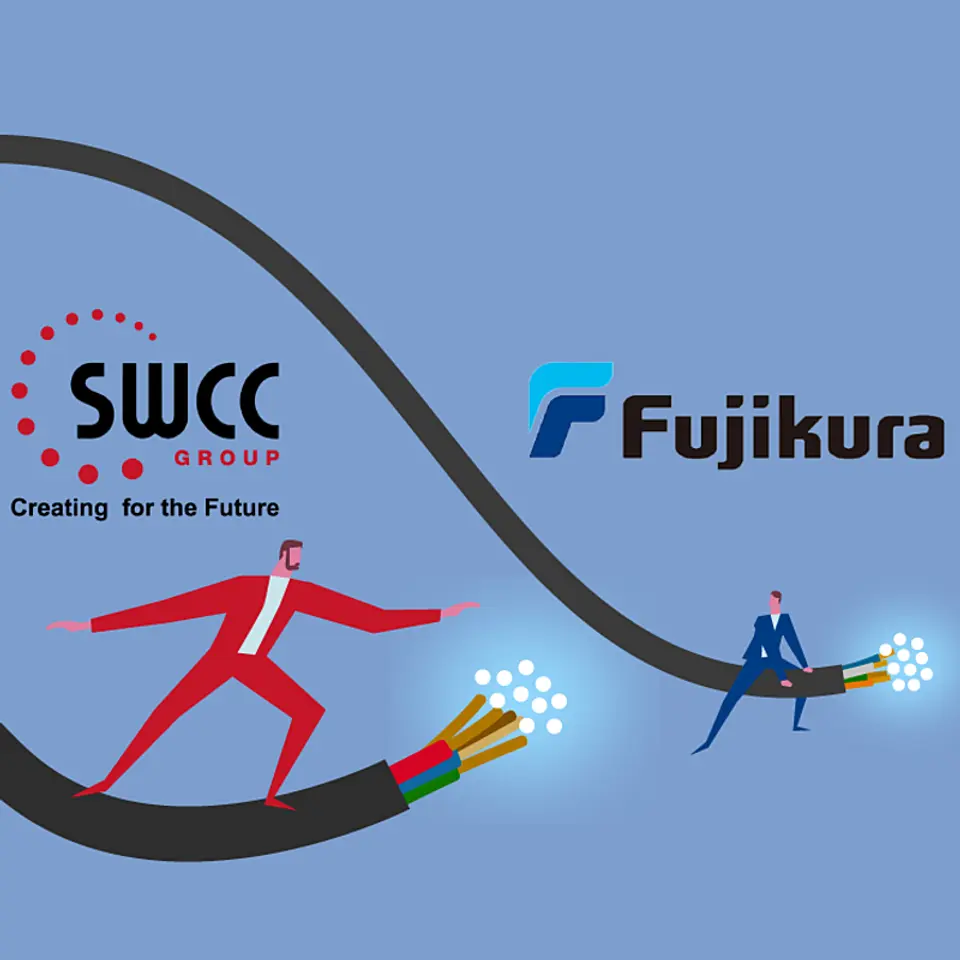
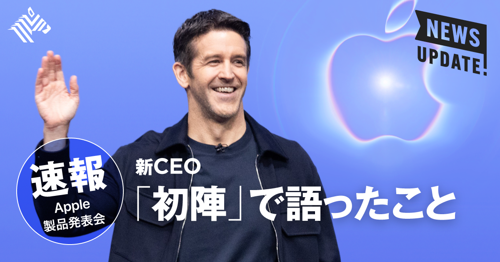

01
【SWCC】誰も知らない昭和企業が株式市場で大注目されていた
発行日時：2026年9月10日 05:30 JST ・ NewsPicks編集部

あなたに関係ありそうな理由
AI向け設備投資の追い風を、需要だけでなく、撤退・統治・資本効率を積み重ねた企業変革として読む材料になるためです。
概要
記事は、電線メーカーのSWCCを、AIデータセンター向けの光ファイバー需要で注目された「突然の成長株」としてではなく、長い企業変革の結果として描く。市場価値は10年で約27倍、足元でも約20倍に拡大したが、2015年には最終赤字を計上していた。転機は2018年に長谷川隆代氏が社長に就いた後の改革である。社外取締役から改革の必要性を突きつけられ、指名・報酬委員会の整備、事業別の採算把握、ROICを軸にした投資判断を進めた。収益の出ない事業から退き、グループ会社を整理し、政策保有株や不動産を売却する一方、強みのあるコネクタや光通信へ人と資金を寄せた。2025年の営業利益はエネルギー・インフラが大半を稼ぐ一方、通信・デバイスは前年比41％増と伸び、AI向けの高密度配線やデータセンターの需要が後押しした。数字だけを追えば、成長分野に乗った会社に見える。だが記事の核は、成長前に何をやめ、誰が意思決定し、収益性をどう共通言語にしたかにある。2024年のROICは11.9％まで上がった一方、長谷川氏自身はROIC偏重が投資を萎縮させる危険も認め、次の段階を「成長ROIC」として後継に託した。表示コメントでも、ROICは組織の対話を整える一時的な共通言語として有効だが、目的化すれば未来の投資を止めかねない、という視点が出た。企業変革は、採算の悪い部門を切るだけでは続かない。撤退で生まれた資金をどの技術へ戻すか、現場の評価や報酬をどの指標と結ぶか、次の経営者にどこまで権限を渡すかまでが設計になる。AI投資の波を読む際も、受注額だけでは足りない。供給能力、顧客集中、投資回収、次の成長を支える人材を並べて見たい。SWCCの事例は、地味な企業でも、変化を数字と統治に落とし込めれば市場の見方を変えられることを示している。さらに、通信需要の伸びが一巡した場合にも耐えられるかは、製品別の利益率だけでなく、設備投資の回収年数と顧客の分散度で確かめたい。短期の株価ではなく、変革を支える仕組みが次の逆風でも働くかを追うことが重要である。従業員や取引先に改革の意図が届いているかも、継続性を測る大切な論点になる。
仕事や会話で使える一言
「AI需要の追い風より前に、何をやめて何へ資本を寄せたかを見たいです。」
NewsPicks原文を読む
02
【速報】新iPhone発表会で見えた「新生アップル」の大方針
発行日時：2026年9月10日 08:10 JST ・ NewsPicks編集部

あなたに関係ありそうな理由
製品のスペック競争ではなく、端末内AI・クラウド・価格・使い方を一つの体験として設計する戦略を読む材料になるためです。
概要
記事は、9月1日にCEOへ就いたジョン・ターナス氏が初めて主導した発表会から、アップルがiPhoneを単体の高性能端末ではなく、「知的な個人ハブ」へ置き直そうとしていると読む。iPhone 18 ProとPro Maxは9月18日発売、予約は12日開始で、A20 Proと従来比で倍増したニューラルエンジンを搭載する。記事が強調するのは、Apple IntelligenceやSiriをクラウド任せにせず、端末側でも処理できるようにする方向だ。写真の編集、ブラウザー上の操作、利用状況に応じた支援を、個人データを扱う日常の動線へ埋め込もうとしている。Pro系では放熱構造、可変絞り、長時間の動画再生なども示されたが、性能値そのものより、常時使えるAIを動かす土台と考えると位置づけが見えやすい。価格はProが1199ドル、日本では21万9800円から、Pro Maxが1299ドル、日本では23万9800円からで、価格帯は明確に上へ動いた。さらに10月には、7.6インチの折りたたみ型iPhone Duoを投入する。米国価格は1999ドル、日本では36万4800円からで、薄型や部品点数の多いヒンジだけでなく、折り畳み時と展開時で表示を変えるiOS 27の設計も競争力に据える。AirPods 5、Apple Watch Series 12、Ultra 4にもAIを横断させるため、利用者にとっては一台ずつの買い替えでなく、手元・耳・腕の情報がつながることが価値になる。表示コメントでは、大画面を使う必然性や外部アプリの収益機会、価格に見合う利用場面を問う声があった。高価な端末を出すこと自体が戦略ではない。オンデバイス処理で何が速く、何を外へ出さずに済み、複数端末を持つ人の日常がどう変わるのかを具体的に示せるかが次の勝負になる。購入時には、端末価格だけでなく、AI機能が使える地域・言語、既存端末との互換性、将来のOS更新を何年受けられるかまで比較したい。故障時の修理性や、折りたたみ部分の耐久性も、日常利用では見過ごせない。利用条件も確認したい。新体制は、ハードの新しさとAIの信頼を同時に試される。
仕事や会話で使える一言
「端末内AIは、性能表よりも、どの個人データを外へ出さずに済むかが価値です。」
NewsPicks原文を読む
03
【株価80％安】ナイキを「ダサくした」戦略ミス
発行日時：2026年9月10日 05:30 JST ・ NewsPicks編集部
あなたに関係ありそうな理由
直販化やデータ活用が、顧客接点を増やす一方で、流通・希少性・専門性を損ねる危険もあることを考える材料になるためです。
概要
記事は、ナイキの株価低迷を、景気や一時的な在庫の問題だけでなく、ブランドがどこで見つかり、何を欲しいと思わせるかという設計の失敗として読み解く。時価総額は2021年のピークから大きく縮み、9月9日時点で565億ドル。年初からも下落し、S&P100から外れた。競合ではアディダス、アシックス、ANTAなどが存在感を増し、とりわけランニングや専門カテゴリーで選択肢が広がった。2020年に就任したドナホー前CEOは、Nike Directを軸に直販と自社デジタル接点を強めた。顧客データを得て利益率を高める狙いは合理的だったが、小売店との関係を弱めた結果、店頭の空白をHokaやOnなどの新興ブランドに渡した。Air ForceやDunkを広く供給したことも、手に入りにくさや発見の楽しさを薄め、定番商品の過剰露出につながったという。記事は、品目を増やせば顧客の選択肢も増えるという単純な図式を疑う。スポーツブランドでは、どの競技の誰にとって不可欠か、どの店員がどう薦めるか、限定品がどんな熱量を生むかが、商品の機能と同じほど効くからだ。ナイキは年間20億ドル規模の製品整理に取り組み、卸売の再建や、ランニングの復権を進める。ランニング売上は5四半期連続の二桁成長、定価販売比率も改善しているが、回復が確定したわけではない。表示コメントでも、DTCは小売を切ることそのものではなく、顧客データを基に流通と役割分担を再設計する手段であるべきだという意見が出た。ブランドが「ダサくなる」とは、単に見た目の評価が落ちることではない。専門家との接点、商品の希少性、店頭での発見、コミュニティへの貢献がばらばらになり、顧客が選ぶ理由を失う状態を指す。価格や広告費だけを最適化しても、競技者や販売現場からの学びが細れば商品企画は鈍くなる。再建では、販売数量を急いで増やすより、どの顧客にどんな場面で選ばれ直すかを測る指標が必要になる。取引先との利益配分も含めて、流通の信頼を取り戻せるかを見守りたい。実店舗の声も鍵になる。重要だ。11月の投資家向け説明で、値引き・在庫・卸売・商品開発をどう一つの戦略へ戻すかが問われる。
仕事や会話で使える一言
「直販化の成否は、売る場所を減らしたかでなく、ブランドを発見する場所を残せたかです。」
NewsPicks原文を読む
04
データセンター建設ブーム、次の巨大商機は「保険」
発行日時：2026年9月10日 05:20 JST ・ The Wall Street Journal
あなたに関係ありそうな理由
AIインフラの投資判断で、建設費だけでなく、災害・停止・サイバーリスクを誰が引き受けられるかが制約になるためです。
概要
記事は、AI向けデータセンターの建設競争が、半導体や電力設備だけでなく保険の需給を大きく変え始めたと伝える。米国を中心とした建設投資は約1兆ドル規模とされ、Swiss Reは世界のデータセンター保険料が2030年に年200億〜300億ドルへ達する可能性を示す。S&P Global Ratingsも、今年だけで100億ドルの追加保険料が生まれると見込む。超大型施設は一棟で200億ドルを超え、メタがルイジアナ州で進める計画は500億ドル規模だ。だが建物が巨大でも、全ての損失を保険会社が引き受けられるわけではない。ハイパースケーラーは自己保有リスクを増やし、保険会社、ブローカー、再保険、外部資本を組み合わせて補償を組む必要がある。対象は火災や風水害だけではない。停電、冷却の故障、サイバー攻撃、テロ、長時間の事業停止、顧客データや契約への影響までが連鎖する。立地では、安価な土地や送電網への接続を求めるほど、竜巻、ひょう、洪水のリスク地域と重なることがある。記事は、米国のデータセンター容量の4割が竜巻多発地域にあり、大規模施設の4分の1超が大規模なひょうの影響を受け得ると指摘する。新しい建物には過去の損害データが少なく、保険料の算定も難しい。保険会社が一施設について10億〜50億ドルを保持できても、単独で巨大リスクを抱えることはできない。表示コメントでは、火災、UPS、蓄電池、冷却、BCPへの投資を、単なる法令順守でなく、最大想定損失を下げて資金調達や保険条件を改善する経営資産として見るべきだという意見があった。AIインフラは、完成すれば収益を生む箱ではない。電力、土地、保険、運用のそれぞれに上限があり、どこかが詰まれば建設計画は止まる。投資額だけでなく、事故時に何が失われ、誰がどこまで負担し、復旧をどの時間で約束するのかを契約と設計の段階から確かめたい。設備の冗長化を増やすほど初期費用は重くなるため、稼働率の目標と許容できる停止時間を顧客契約とそろえておく必要がある。保険は最後の救済策ではなく、設計上の弱点を映す鏡でもある。地域住民や電力網への影響も、保険では埋めにくい事業継続リスクとして残る。
仕事や会話で使える一言
「データセンターの競争力は、建てられるかだけでなく、止まった時の損失を引き受けられるかです。」
NewsPicks原文を読む
05
【大橋未歩】「成功」「失敗」のプレッシャーを乗り越える秘訣
発行日時：2026年9月10日 05:30 JST ・ NewsPicks Career
あなたに関係ありそうな理由
他人の評価や市場価値だけで進路を決めず、自分で選んだ経験を次の仕事へどうつなげるかを考える材料になるためです。
概要
記事は、元テレビ東京アナウンサーの大橋未歩さんが、45歳でニューヨークへ移った経験を手がかりに、「成功」と「失敗」の物差しを自分に取り戻す過程を語る。大橋さんは会社員からフリーへ転じた後も、仕事の中に以前の肩書きの余韻が残り、慣れた環境に留まっている感覚があったという。海外移住は、より大きな市場で自分を売り込むためだけの選択ではない。安心できる場所を一度離れ、学び直し、異なる人たちと暮らすことで、自分が何を大切にするかを確かめる試みだった。記事は、2025年の日本人出国者数が約1473万人で2019年比ではなお7割程度、パスポート保有率も英国や米国、韓国より低いという数字を挙げる。ただし、話の結論は「海外へ行けばよい」ではない。日常の範囲を少し越える経験を、自分の意思で持つことが、働き方や人との関係を見直す契機になるという。大橋さんは34歳で脳梗塞を経験し、職場は自分がいなくても回ると知ったことで、社会にとって意味のある仕事へ目を向けるようになった。市場価値を最大化するために自分を売ることと、自分が納得する道を選ぶことは同じではない。記事では、妊活や喪失といった私的な経験を、The Mothでの語りを通じて人と分かち合ったことにも触れる。共有は常に正解ではなく、誰に何をどこまで話すか、相手の状況に配慮する必要がある。それでも、失敗を隠すだけでは見えない支え合いが生まれる場合がある。表示コメントには、キャリアを積んだ後に未知の環境へ出ることの難しさと、経験の蓄積に新しい枝を足す意義を読む声があった。転職、移住、学び直しのいずれでも、他人から成功と見えるかより、自分で引き受けた選択を次の行動へどう結ぶかが重要になる。小さな越境なら、初めての役割を引き受ける、専門外の人と話す、短期の学習を始めることでもよい。目標を外から借りる時にも、なぜ自分が選ぶのかを言葉にしておけば、迷った時の基準になる。周囲からの助言と、自分の決定を分けて記録する習慣も役に立つ。選択の記録は後で効く。失敗を避けるのではなく、振り返って言葉にし、次の判断に使える形に変えることが、長いキャリアの強さになる。
仕事や会話で使える一言
「成功の見え方より、自分で選んだ経験を次の行動にどう結ぶかを大切にしたいです。」
NewsPicks原文を読む